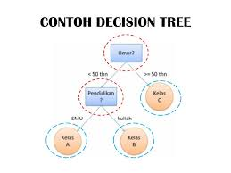
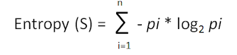
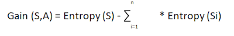

Material
Decision Tree
Pengertian
Decision Tree atau yang disebut dengan Pohon keputusan adalah salah satu metode klasifikasi yang paling populer karena mudah untuk diinterpretasi oleh manusia. Pohon keputusan adalah model prediksi menggunakan struktur pohon atau struktur berhirarki. Konsep dari pohon keputusan adalah mengubah data menjadi pohon keputusan dan aturan-aturan keputusan.
Manfaat utama dari penggunaan pohon keputusan adalah kemampuannya untuk mem-break down proses pengambilan keputusan yang kompleks menjadi lebih simpel sehingga pengambil keputusan akan lebih menginterpretasikan solusi dari permasalahan. Pohon Keputusan juga berguna untuk mengeksplorasi data, menemukan hubungan tersembunyi antara sejumlah calon variabel input dengan sebuah variabel target. Pohon keputusan memadukan antara eksplorasi data dan pemodelan, sehingga sangat bagus sebagai langkah awal dalam proses pemodelan bahkan ketika dijadikan sebagai model akhir dari beberapa teknik lain. Sering terjadi tawar menawar antara keakuratan model dengan transparansi model. Dalam beberapa aplikasi, akurasi dari sebuah klasifikasi atau prediksi adalah satu-satunya hal yang ditonjolkan, misalnya sebuah perusahaan direct mail membuat sebuah model yang akurat untuk memprediksi anggota mana yang berpotensi untuk merespon permintaan, tanpa memperhatikan bagaimana atau mengapa model tersebut bekerja.
Struktur Pohon Keputusan
Model pohon keputusan dibuat menyerupai bentuk pohon, dimana pada umumnya sebuah pohon terdapat akar (root), cabang dan daun (leaf). Pada pohon keputusan juga terdiri dari tiga bagian sebagai berikut :
a.Root node
Root node atau node akar merupakan node yang terletak paling atas dari suatu pohon.
b.Internal node
Internal node ini merupakan node percabangan, dimana pada node ini hanya terdapat satu input dan mempunyai minimal dua output.
c.Leaf node
Node ini merupakan node akhir, hanya memiliki satu input, dan tidak memiliki output. Pada pohon keputusan setiap leaf node menandai label kelas.

Tahapan dalam membuat pohon keputusan :
\1. Pohon dimulai dengan sebuah simpul yang mereperesentasikan sampel data pelatihan yaitu dengan membuat simpul akar.
\2. Jika semua sampel berada dalam kelas yang sama, maka simpul ini menjadi daun dan dilabeli menjadi kelas. Jika tidak, gain ratio akan digunakan untuk memilih atribut split, yaitu atribut yang terbaik dalam memisahkan data sampel menjadi kelas-kelas individu.
\3. Cabang akan dibuat untuk setiap nilai pada atribut dan data sampel akan dipartisi lagi.
\4. Algoritma menggunakan proses rekursif untuk membentuk pohon keputusan pada setiap data partisi. Jika sebuah atribut sudah digunakan disebuah simpul, maka atribut tidak akan digunakan lagi di simpul anak-anaknya.
\5. Proses akan berhenti jika dicapai kondisi seperti berikut :
-Semua sampel pada simpul berada di dalam satu kelas
-Tidak ada atribut lainnya yang dapat digunakan untuk mempartisi sampel lebih lanjut. Dalam hal ini akan diterapkan suara terbanyak. Ini berarti mengubah sebuah simpul menjadi daun dan melabelinya dengan kelas pada suara terbanyak.
Untuk membuat pohon keputusan digunakan rumus berikut :
- Entropi

S = himpunan kasus
n = jumlah partisi S
pi = proporsi dari Si terhadap S
- Gain

S = himpunan kasus
n = jumlah partisi atriut A
A = atribut
Si = jumlah kasus pada partisi ke-i
Implementasi
Disini saya menggunakan bahasa pemrograman python, dimana agar program dapat berjalan kita harus mengintall library pada python seperti pandas, sklearn, numpy, matplotlib. disini saya menggunkaan mushroom dataset.
berikut contoh script nya :
import numpy as np
import pandas as pd
from sklearn.metrics import confusion_matrix
from sklearn.tree import DecisionTreeClassifier
from sklearn.model_selection import train_test_split
from sklearn.metrics import accuracy_score
from sklearn.metrics import classification_report
# Function importing Dataset
def importdata():
balance_data = pd.read_csv("mushroom.csv",sep= ',', header = 1)
# Printing the dataset shape
print ("Dataset Lenght: ", len(balance_data))
print ("Dataset Shape: ", balance_data.shape)
# Printing the dataset observations
print('dataset :')
print (balance_data.head())
return balance_data
# Function to split the dataset
def splitdataset(balance_data):
# Seperating the target variable
X = balance_data.values[:, 1:5]
Y = balance_data.values[:, 0]
# Spliting the dataset into train and test
X_train, X_test, y_train, y_test = train_test_split(
X, Y, test_size = 0.3, random_state = 100)
return X, Y, X_train, X_test, y_train, y_test
# Function to perform training with giniIndex.
def train_using_gini(X_train, X_test, y_train):
# Creating the classifier object
clf_gini = DecisionTreeClassifier(criterion = "gini",
random_state = 100,max_depth=3, min_samples_leaf=5)
# Performing training
clf_gini.fit(X_train, y_train)
return clf_gini
# Function to perform training with entropy.
def tarin_using_entropy(X_train, X_test, y_train):
# Decision tree with entropy
clf_entropy = DecisionTreeClassifier(
criterion = "entropy", random_state = 100,
max_depth = 3, min_samples_leaf = 5)
# Performing training
clf_entropy.fit(X_train, y_train)
return clf_entropy
# Function to make predictions
def prediction(X_test, clf_object):
# Predicton on test with giniIndex
y_pred = clf_object.predict(X_test)
print("Predicted values:")
print(y_pred)
return y_pred
# Function to calculate accuracy
def cal_accuracy(y_test, y_pred):
print("Confusion Matrix: ",
confusion_matrix(y_test, y_pred))
print ("Accuracy : ",
accuracy_score(y_test,y_pred)*100)
print("Report : ",
classification_report(y_test, y_pred))
# Driver code
def main():
# Building Phase
data = importdata()
X, Y, X_train, X_test, y_train, y_test = splitdataset(data)
clf_gini = train_using_gini(X_train, X_test, y_train)
clf_entropy = tarin_using_entropy(X_train, X_test, y_train)
# Operational Phase
print("Results Using Gini Index:")
# Prediction using gini
y_pred_gini = prediction(X_test, clf_gini)
cal_accuracy(y_test, y_pred_gini)
print("Results Using Entropy:")
# Prediction using entropy
y_pred_entropy = prediction(X_test, clf_entropy)
cal_accuracy(y_test, y_pred_entropy)
# Calling main function
if __name__=="__main__":
main()
Kelebihan dan Kekurangan Pohon Keputusan
Kelebihan dari metode pohon keputusan adalah:
a. Daerah pengambilan keputusan yang sebelumnya kompleks dan sangat global, dapat diubah menjadi lebih simpel dan spesifik.
b. Eliminasi perhitungan-perhitungan yang tidak diperlukan, karena ketika menggunakan metode pohon keputusan maka sample diuji hanya berdasarkan kriteria atau kelas tertentu.
c. Fleksibel untuk memilih fitur dari internal node yang berbeda, fitur yang terpilih akan membedakan suatu kriteria dibandingkan kriteria yang lain dalam node yang sama. Kefleksibelan metode pohon keputusan ini meningkatkan kualitas keputusan yang dihasilkan jika dibandingkan ketika menggunakan metode penghitungan satu tahap yang lebih konvensional
d. Dalam analisis multivariat, dengan kriteria dan kelas yang jumlahnya sangat banyak, seorang penguji biasanya perlu untuk mengestimasikan baik itu distribusi dimensi tinggi ataupun parameter tertentu dari distribusi kelas tersebut. Metode pohon keputusan dapat menghindari munculnya permasalahan ini dengan menggunakan criteria yang jumlahnya lebih sedikit pada setiap node internal tanpa banyak mengurangi kualitas keputusan yang dihasilkan.
Kekurangan Pohon Keputusan
a. Terjadi overlap terutama ketika kelas-kelas dan criteria yang digunakan jumlahnya sangat banyak. Hal tersebut juga dapat menyebabkan meningkatnya waktu pengambilan keputusan dan jumlah memori yang diperlukan.
b. Pengakumulasian jumlah eror dari setiap tingkat dalam sebuah pohon keputusan yang besar.
c. Kesulitan dalam mendesain pohon keputusan yang optimal.
d. Hasil kualitas keputusan yang didapatkan dari metode pohon keputusan sangat tergantung pada bagaimana pohon tersebut didesain.
Semoga bermanfaat..